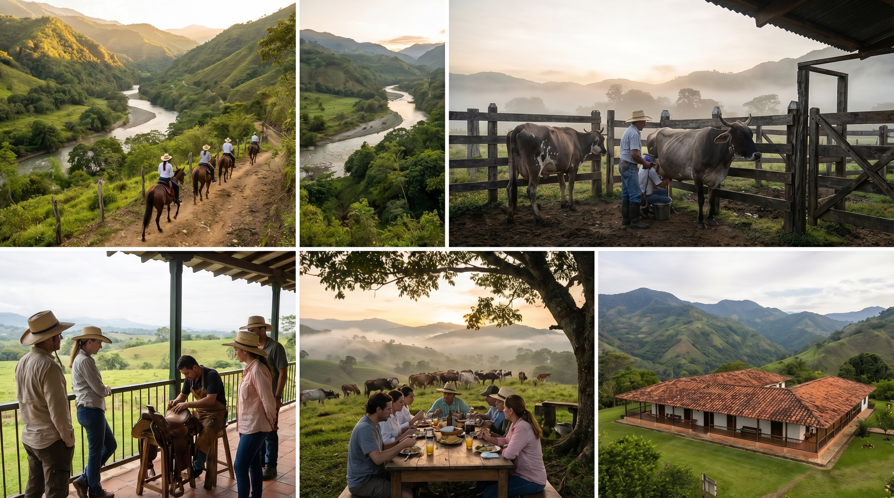

Ruta 4 — Cañón del Río Alicante, Ecorrefugio, Maceo, ordeño y talabartería.
Llegada a Puerto Berrío y alojamiento en Apartahotel San Diego.
Senderismo y naturaleza; coordinar con Conecta Nativa (referencia $40.000 – $70.000 + guía).
Noche con cena campesina y tertulia ($150.000 – $220.000 / persona aprox.).
Highlight
Conexión con el río Alicante y el cañón.
Hotel Agromaceo o Divan Maceo; Agropecuaria Para Siempre SAS — ordeño, caballo, talabartería ($80.000 – $120.000 / persona).
Casa del río hotel y retorno a Medellín.